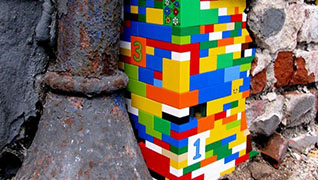
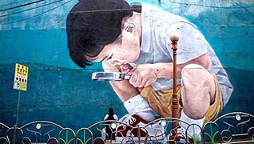
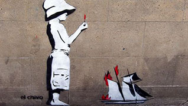

Historia del arte callejero
El término street art surge a mediados de los años 90, también bajo el nombre de Post-graffitti. A partir de la consideración de qué clase social se vería más reflejada en él.
Leer más... 
¿Qué es arte popular?
No es sencillo definir el arte popular, o su categoría opuesta, el arte de élites o elitista. Estos términos se emplean para designar distintas aproximaciones al arte.
Leer más... 
Arte efímero
Por lo general las intervenciones de este tipo no duran por mucho, pues las paredes son pintadas de nuevo y las superficies limpiadas por el mantenimiento de los gobiernos locales.
Leer más...
Arte clandestino
La aparición de las obras de arte callejero suelen ocurrir durante la noche o la madrugada, de modo que la gente al día siguiente se tropiece con ellas, en lugar de verlas ocurrir.
Leer más...